Oda odakli konusma
Aktif kanal, katilimci durumu ve ses aksiyonlari hizli taranir.
Premium voice communities
Modern topluluklar, net ses, esnek oda sistemi ve karanlik cam yuzeylerle tasarlanmis guven veren bir masaustu deneyimi.
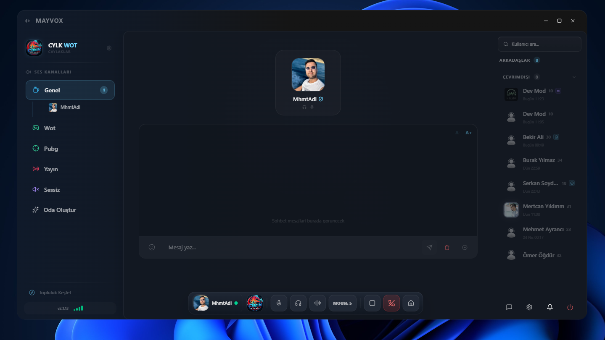
Voice features
Push-to-talk, oda modlari, mikrofon kontrolleri ve katilimci durumu tek bir yogun ama okunabilir arayuzde toplanir.
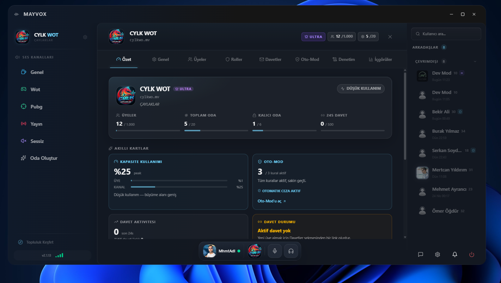
Aktif kanal, katilimci durumu ve ses aksiyonlari hizli taranir.
Konusma kontrolleri ana deneyimin alt merkezinde sabit kalir.
Gaming, yayin, sessiz ve genel gibi farkli kullanimlar ayrisir.
Community system
Sunucu kesfi, davet akisi, uye durumlari ve yonetim yuzeyleri ayni premium dilde calisir.
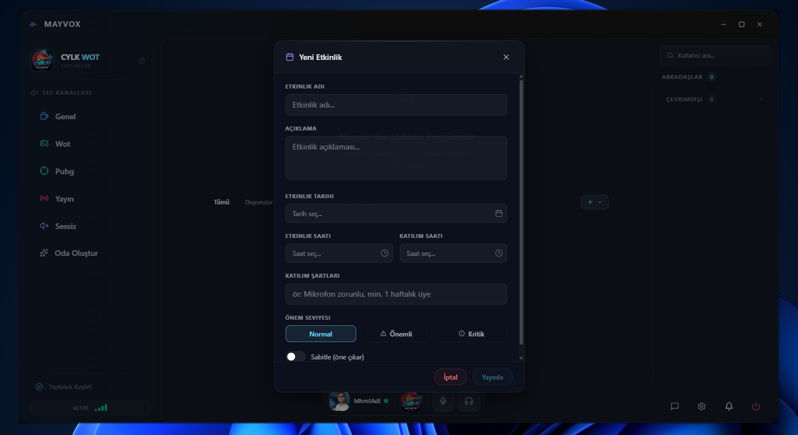
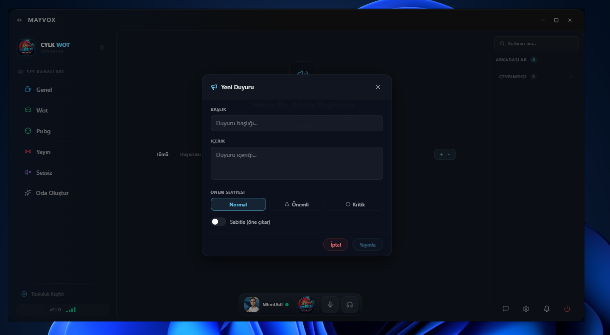
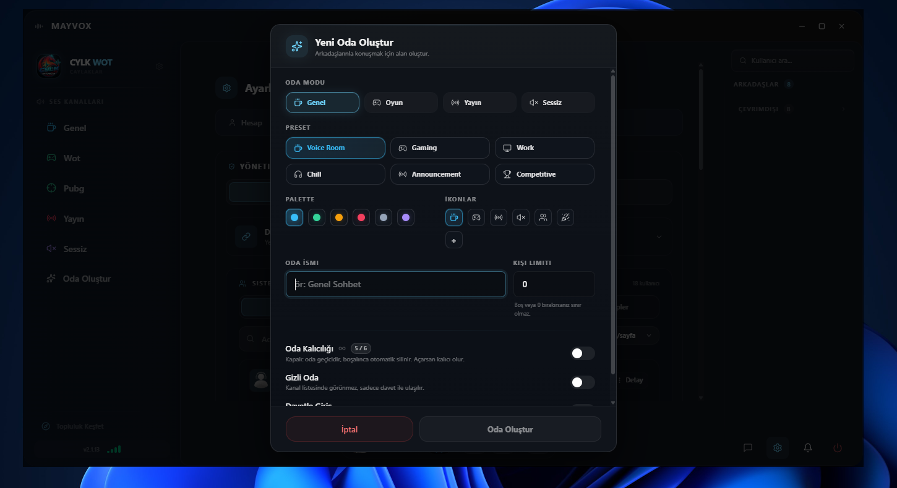
Customization
Tema, oda ikonlari, renk secimleri ve ayar yuzeyleri guclu ama karmasik hissettirmeyen bir sistem uzerinde ilerler.
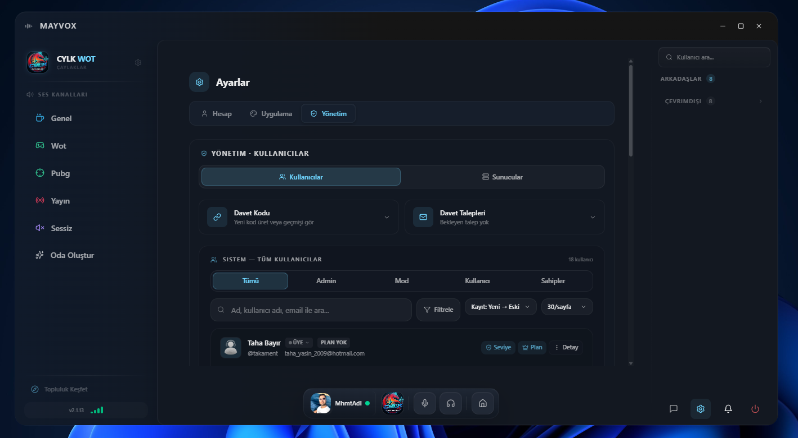
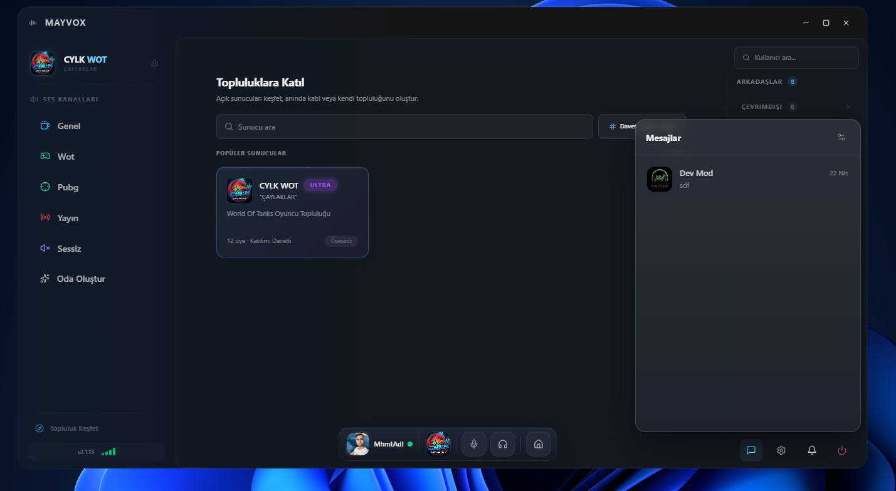
UX quality
Modal katmanlari, bildirimler, ayarlar ve sohbet yuzeyleri koyu cam estetikle ayni ritmi korur.
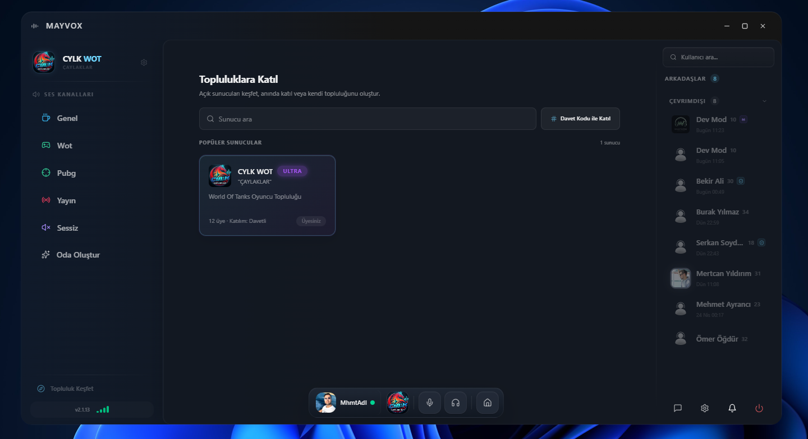
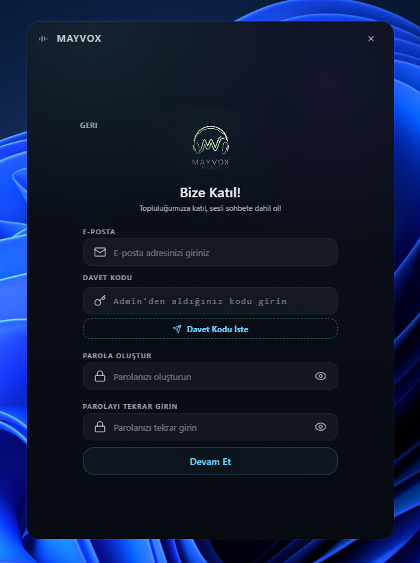
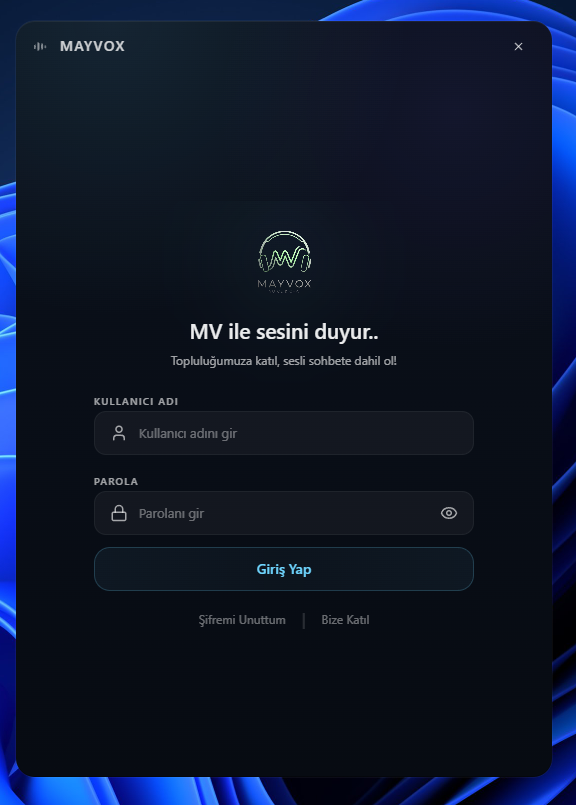
Product gallery
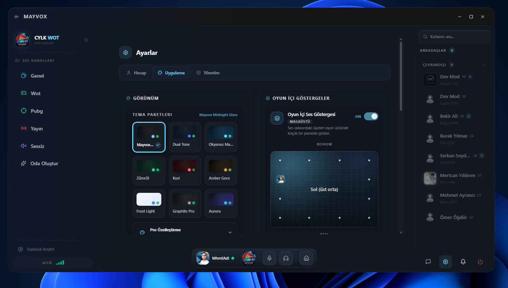
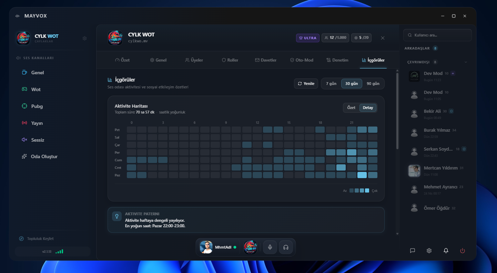
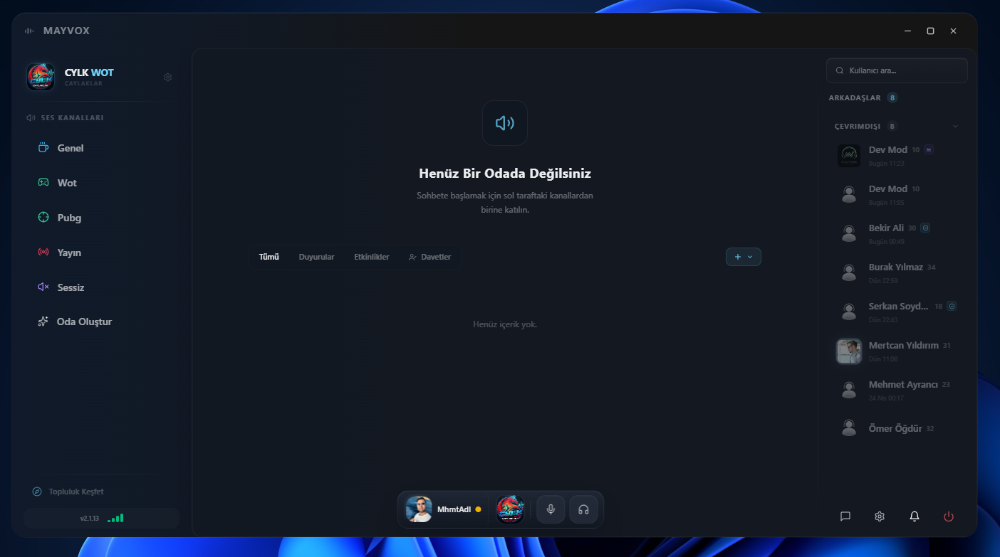